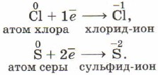
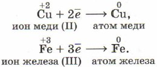
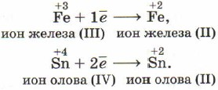
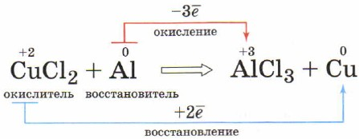

Химические реакции, в результате которых происходит изменение степеней окисления атомов химических
элементов или ионов, образующих реагирующие вещества, называют окислительно-восстановительными реакциями.



Атомы, ионы или молекулы, принимающие электроны, называют окислителями.
